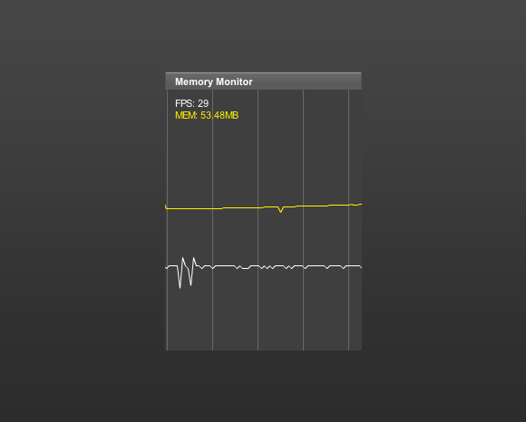

11. The memory monitor panel
The monitor function shows the framerate of the movie (white) and the memory consumed by the Adobe Flash Player or Adobe AIR runtime (yellow). Note: The memory function is a bit experimental due to the fact that the Monster Debugger uses System.totalMemory on the client side. This property returns the total amount of memory that's being used by all the Adobe Flash Player instances on your system.